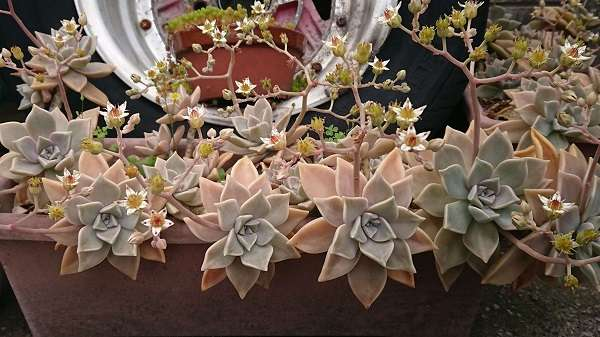
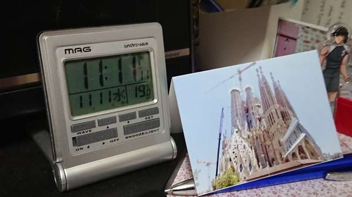
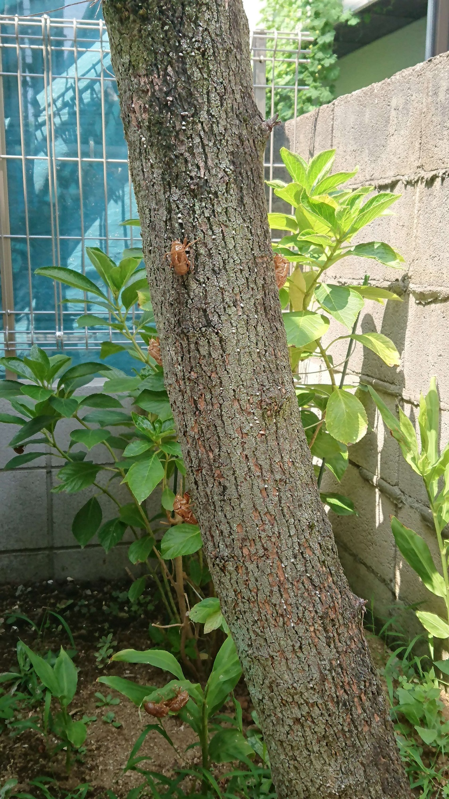
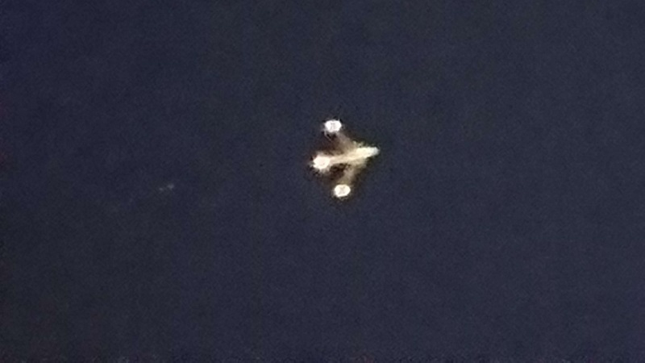
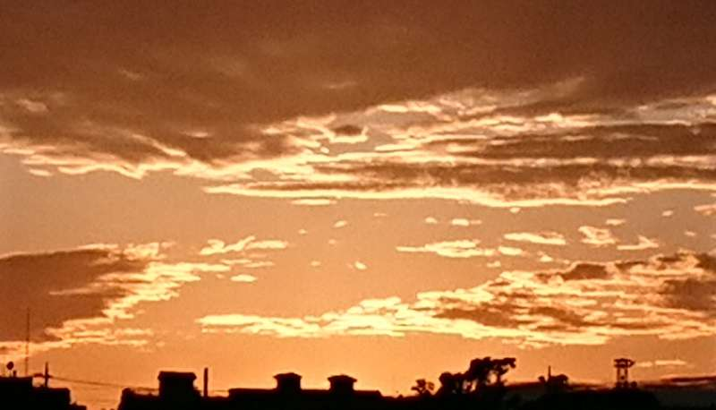
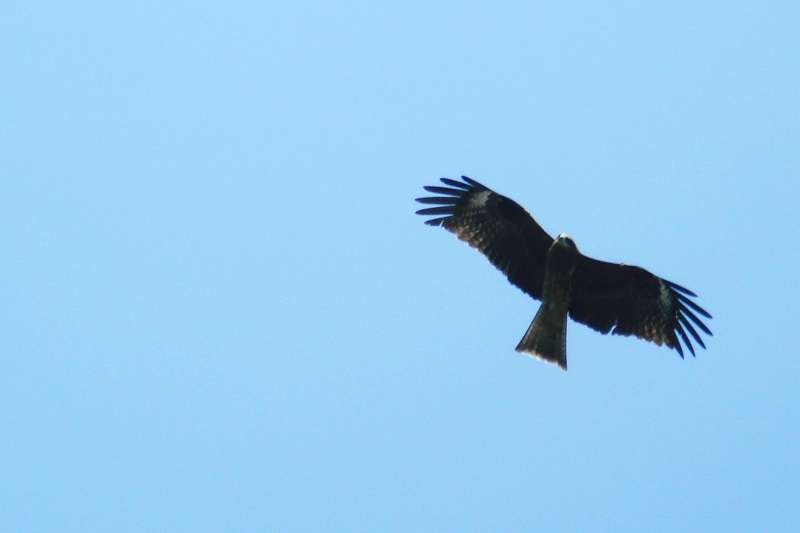
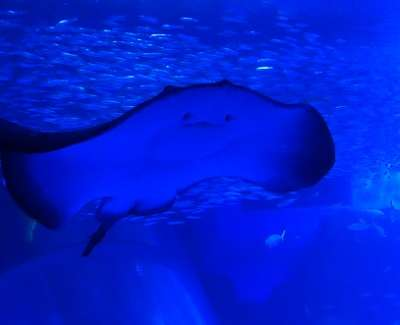
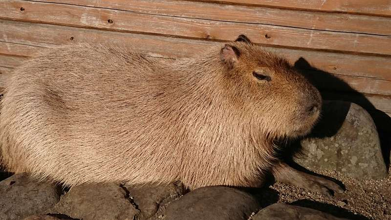

ちょうど良い環境に花は咲く
女の子は森に迷い込んでしまいました
でも 大丈夫 家を見つけたよ 中に入ってみたよ
女の子はお腹がすきました
でも 大丈夫 お粥を 3つも 見つけたよ １つ目は熱すぎで２つ目は冷たい
でも大丈夫 ３つ目は ちょうど良い暖かさで 全部食べてしまいました
椅子があったので座ろうとしましたが１つは大きすぎ
もう一つは もっと大きかった
でも 大丈夫 もう１つは ちょうど良かったよ
女の子は眠くなりました
でも 大丈夫 ベッドが ３つも ありました
１のベッドは硬かった ２のベッドは柔らかすぎた
でも 大丈夫 ３のベッドは ちょうど良かったので ウトウトと眠りました
これは英国の有名な童話で３匹のクマに出くわす女の子の話です
でも この女の子の名前が ゴルディロックスちゃんとは知らなかった
とても可愛らしい金髪の女の子 ゴルディロックスちゃん
人間が共に生きてゆくために ちょうど良いゴルディロックス
ちょうど良い範囲で 程よく 生きられるんだね
無理しない 素直なゴルディロックスちゃん 共に有らんことを
2020/11/11 now
今
まだまだコロナの中
先が見えない
地球規模で暗雲の時を迎え
我々人類は いかに戦っていくのか
ワクチン開発も必死だ
古くて新しい感染症との戦いは
火蓋を切ったばかりかも知れない
これからの人類の存亡を賭けて
コロナ禍で 何を見出せるのか
それとも ティラノのと同じ運命をたどるのか
あっ... まだ未完じゃないか
何としても... 完成させたい
2020/11/26 semi-driven
蝉ドリブンの樹によせて
花が咲き誇るのを見ると 何か嬉しいよね
夏には蝉が競うように 鳴き誇るよね
猿山では お猿さんたちが のんびり日向ぼっこ
中にはグルーミングしている親子だろうか
子供たちはキャッキャして 微笑ましく見えるが
本当の自由はあるのだろうか
人間と強制的に共存してもらっている
犬も猫も鳥も みんな幸せだろうか
人間は他の生き物と 上手く謳歌できるのだろうか
細胞の一部になったものも
腸内で働いてくれるものも
目に見えなくとも 意識せずとも
自分の存在の中にみんながいる
勝手だけれど 多くのものと咲き誇りたい
謳歌ドリブンでいきたい
2020/11/30 mieruka-nightflight
見える化
健康な状態から 徐々に虚弱に進む
老化すると体の機能が昨日とは違うなとは
自分では なかなか分らないもの
認知機能の定価 いや 低下は すぐには分らないけど
早めに気付くことが 大事だろ
疲れやすいのも 全集中が出来なくなったとかは
体調にもよるからと 見過ごす事が多くなってくると 危ない
毎日の日課があると 発見しやすいかも知れない
兆候は手足が冷えやすくなる
フレンドに会うのが面倒になる
イルミネーションの時期に家にいるなど心身に現われる
見える化するための 具体的な数量も大事だろう
体操, 運動, 仕事など 一定時間内の運動量,認知状況を知り
自分なりの 物差しを作ると 感知しやすくなるだろう
2020/12/10 everyone's-sunset
みんなの夕日
海に囲まれた島国
青い海と白い砂浜
緑の樹木と真っ赤な夕日
東の辺境な立地が 外から隔絶され
穏やかな流れが風情を感じ
だいたい同じ物を食べて同じような物を見て
鳥獣や虫の音を聞いて花の香りを愉しむ
自分も相手も喜怒哀楽があって
自分を思えば相手を察する事が出来る
大なり小なり弱い物の集合体で寄り添っている
今は色んな国から右往左往して
だんだん地球が狭くなって
相手の国々も喜怒哀楽があって
自分達と同じような習慣や風習があって
我々と同じように全く違った思考や感性があって
そんな事がわかってきたよ
大気に囲まれた惑星
同じ ひとつの大地に根ざし
同じ ひとつながりの空を見上げ
思いも 同じ様なものかも知れないよ
明日も良い日でありますように
2020/12/24 hayabusa's-friends
はやぶさは友達だよ
はやぶさ2は 3億km以上離れた小惑星リュウグウに
2018年に到着し1年以上調査にあたった
2018/9/21 探査ローバーMINERVAの後継機
イブ－とアウルらがゴツゴツとした表面を探査した
1回目2019/2/22のタッチダウン地点(たまてばこ)で採取
そして2回目は人工クレーター(おむすびころりん)2019/4/5の
直径約14.5ｍの近くに2019/7/11直径7ｍの着地予定地を
設定し その中心から60cmの位置に着陸(うちでのこづち)して
見事にサンプルリターンミッション(ガスと砂の採取)を
成功させたよ Wonderful！ 楽しみだね
たまてばこからは 白い煙ではなく 黒い粒子状の物質が
予定の量よりザクザク入っていたらしい Fabulous！
うちでのこづちは人工クレーターにより表面だけでなく
宇宙風化の影響を受けにくい地中物質の採取に成功し
太陽系の誕生した46億年前の痕跡を調べられる
貴重な資料になるんだ ワクワクするね
地球の創世や水,有機物の起源が解るヒントが
あるかも知れない まさに奇跡的だ Marvelos！
そして はやぶさ2は次のミッションに すでに旅立っている
10年位かけて やはり水が豊富に含まれているとされる
小惑星フェートン(1998KY26)だ しかも その直径は30ｍ
約5分おきに昼と夜が来て約11分で自転する
島国の人類が 宇宙の大海原に乗り出していく
飽くなき太陽系探求が 地球人として
実社会に実装されていく Fantastic！
2020/12/25 not-ryugu
リュウグウの使いじゃないよ
はやぶさ２が2014年12月に打ち上げられ Good！
約6年をかけて2020年12月6日に地球に帰還し Great！
カプセルをオーストラリアのウーメラ砂漠に着地させた
やったー Excellent！ おめでとう
それは高度22万kmで分離されたリュウグウからの玉手箱
それは高度約120kmで地球の大気圏に突入し
秒速約12kmの速さの1万度を超える火球で
その健在をアピールしたのだ ブラボー
その後 高度約10kmでパラシュートを開き
そのリュウグウからの玉手箱は
高度22万kmから このウーメラ砂漠を指して
悠然と舞い降りたのだ Amazing！
2020/12/31 kapibara
僕はネズミの仲間だよ
今年はコロナに始まり
コロナで終わるね
コロナ禍も 早く終わって欲しい
来年はコロナにも
上手く対応して 人間の全体力
人間の和で 何とか押さえ込んで
焦らずゆっくりと 確実に 本来の
活動にプラスのスピンオフが得られる
全ての人々が重要な鍵を握っている
その総力を一歩一歩育てる年になるように
牛さん お願いしますよ
